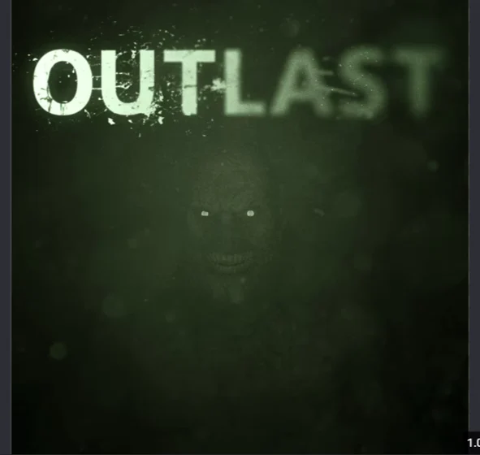
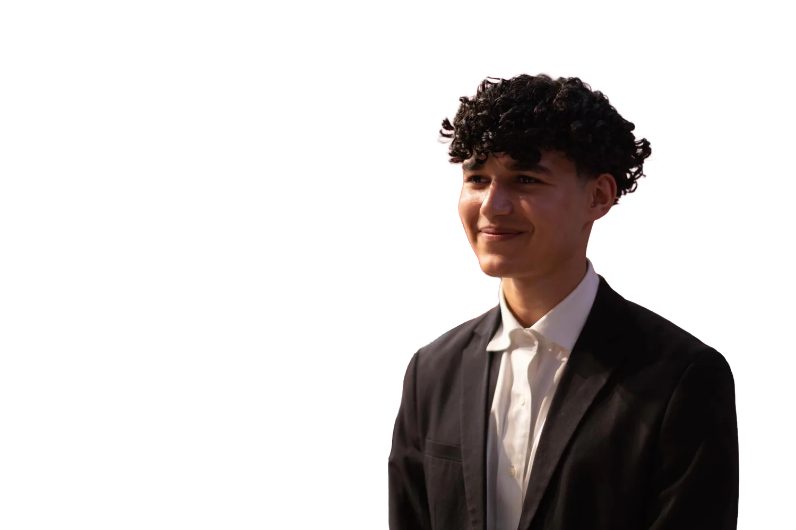
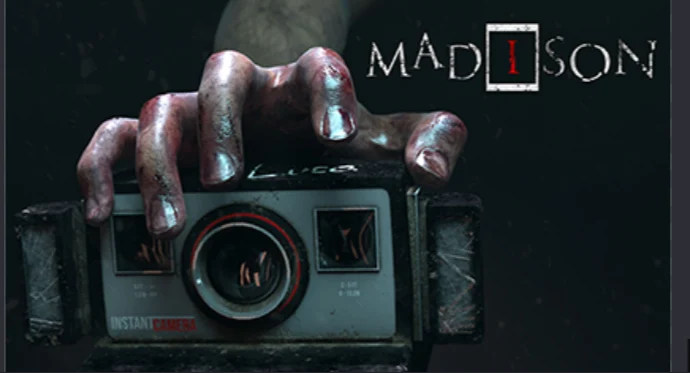
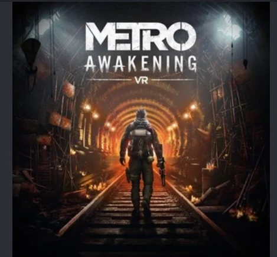
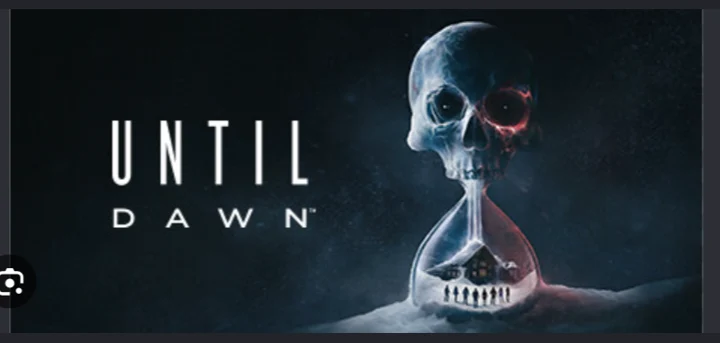
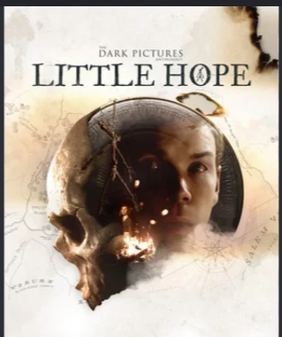

Outlast
De camera met een batterij die leeg kan raken, zorgt voor extra spanning. Ook vind ik het spannend dat je moet vluchten en je verstoppen.
Persoonlijk dossier
Ik ben Ilias Kamil, een 17-jarige game developer uit Amsterdam.
Als kind wilde ik weten hoe de games die ik speelde in elkaar zaten. Nu studeer ik Game Development aan het Mediacollege Amsterdam en leer ik hoe ik zelf games kan ontwikkelen.
Op school werk ik met UI, animatie en Shader Graph. Mijn grootste interesse ligt bij het programmeren in C# met Unity. Ik vind het vooral leuk om problemen op te lossen, nieuwe dingen te leren en te zien hoe mijn code uiteindelijk werkt in een game.

Mijn stappenplan
Ik volg de opleiding Game Development aan het Mediacollege Amsterdam. Mijn grootste interesse ligt bij C# en Unity. Tijdens mijn stage wil ik meer ervaring opdoen en leren hoe het werken binnen een gamebedrijf gaat.
Na mijn stage wil ik solliciteren bij Abbey Games om mijn kennis van gameplay-programmeren te verbeteren en meer ervaring op te doen.
Na ongeveer twee tot vier jaar werkervaring wil ik solliciteren bij Guerrilla Games. Hier wil ik mezelf verder ontwikkelen als programmeur en ervaring opdoen binnen een grotere gamestudio.
Mijn uiteindelijke droom is om een eigen gamebedrijf te beginnen dat first-person survival-horrorgames maakt voor PlayStation, pc en VR. Tijdens mijn loopbaan wil ik alvast ideeën voor mijn eigen studio uitwerken.
Mijn inspiratie
Wat ik zo leuk vind aan horrorgames, is dat ze je helemaal kunnen meenemen in hun wereld. Vooral de spanning, onverwachte momenten, geluiden en sterke verhalen spreken mij aan. Deze vijf games laten voor mij zien hoe je op verschillende manieren een spannende ervaring kunt maken.

De camera met een batterij die leeg kan raken, zorgt voor extra spanning. Ook vind ik het spannend dat je moet vluchten en je verstoppen.

De psychologische horror, spannende puzzels en onverwachte gebeurtenissen maken deze game voor mij bijzonder.

Door VR voelt het alsof je echt in de game zit. Vooral de donkere omgevingen en geluiden maken het spannend.

Het verhaal en de keuzes die je maakt spreken mij aan. Elke beslissing kan gevolgen hebben voor de personages.

De mysterieuze sfeer en het verhaal vind ik interessant. Vooral dat je langzaam ontdekt wat er aan de hand is.